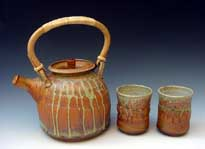
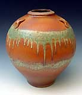

| Dan Dermer
American studio potter
Dan
Dermer has been working in clay since 1981, when he began
making wheel-thrown pottery at the age of 11. In the 1990's, he
had a long hiatus from regular studio work, spending time instead
in the high-tech environment of Silicon Valley. In 2001, Dan opted
for working less, and enjoying hobbies more.
Dan's
passion for clay was reborn via a ceramics studio built at his home
in San Jose. Most recently, after kicking an addiction to copper
red pots, his latest work emphasizes earthy, ash-type glazes
made with various colorants -- iron, copper, nickel, manganese,
layered over traditional functional vessels thrown from a toasty
warm buff stoneware clay.
Recipes/Tech
Info
The teapot and cups pictured above have a combination of glazes
layered by spraying in succession a matt glaze used to prevent glazes
from running too much, a thin layer/spiral of Temmoku for interesting
yellows and oranges, and the following fake ash glaze, usually used
only on the upper third of the piece -- a formula Dan picked up
at a Steven Hill workshop two years ago:
SH
Fake Ash cone 10 Reduction
Kona F4 6.82%
Dolomite 3.79%
Whiting 45.45%
EPK 30.30%
Flint 13.64%
total. 100.00%
Bentonite 2.27%
For Blue add:
Red Iron Oxide 1.00%
Cobalt Carbonate 1.00%
For Green add:
Copper Carbonate 6%
For Yellow add:
Nickel Carbonate 3%
More Articles
More Artists of the Week
|
{kind=link}
{kind=link}